Анимации книгиAnimations of the book
Все анимации, на которые ведут QR-коды книги «Квантовая теория поля для экспериментаторов и не только».All animations linked by the QR codes of the book “Quantum Field Theory for Experimentalists and Beyond”.
Том 1, гл. 1 «Волны внутри нас»Volume 1, Chapter 1 “Waves Inside Us”
- Поле Хиггса как мёдThe Higgs field as honeyQR 0001
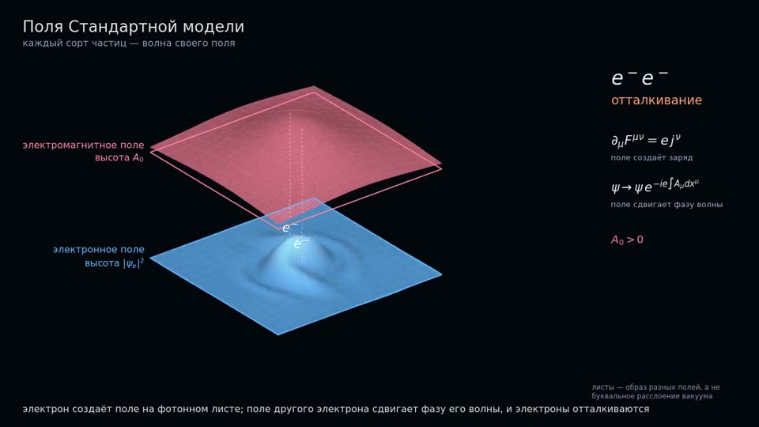
Поля Стандартной модели: матрас полейStandard Model fields: a mattress of fieldsQR 0002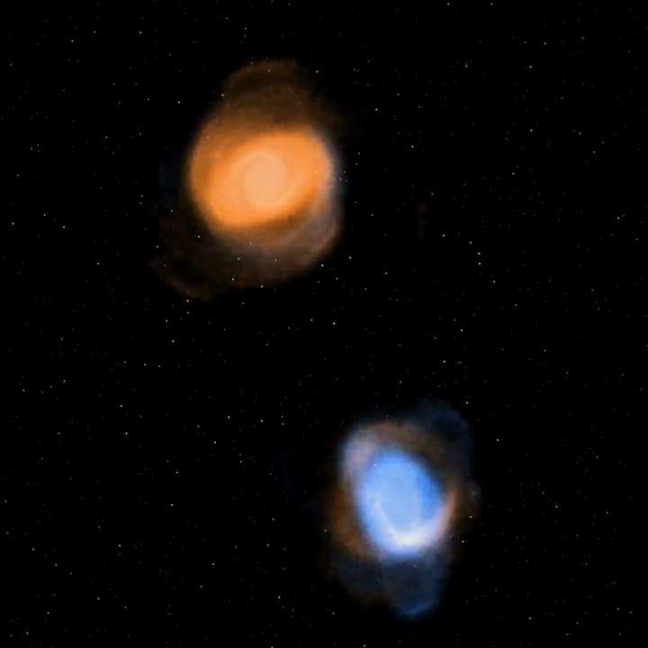
Слияние двух галактикMerger of two galaxiesQR 0003
Том 1, гл. 2 «Век открытий»Volume 1, Chapter 2 “A Century of Discoveries”
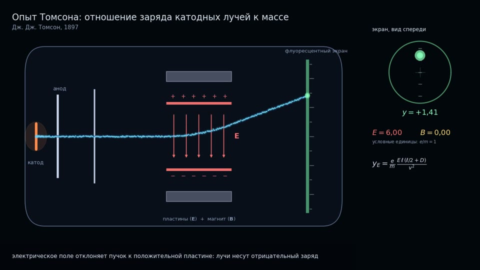
Опыт Томсона: отношение заряда катодных лучей к массеThomson's experiment: the charge-to-mass ratio of cathode raysQR 0004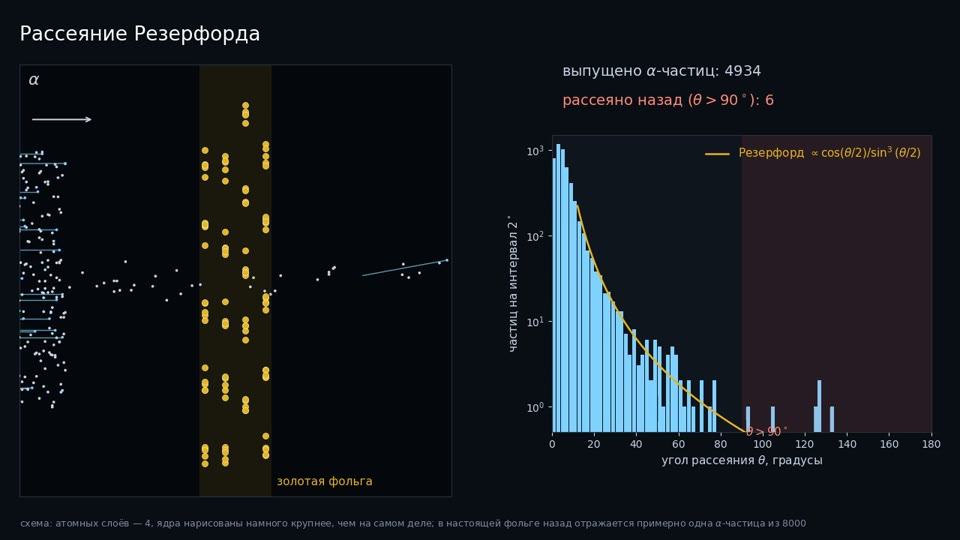
Опыт Резерфорда — Гейгера — МарсденаThe Rutherford–Geiger–Marsden experimentQR 0005 Электрон в вакуумном электромагнитном полеAn electron in the vacuum electromagnetic fieldQR 0006
Электрон в вакуумном электромагнитном полеAn electron in the vacuum electromagnetic fieldQR 0006 Широкий атмосферный ливеньA cosmic-ray air showerQR 0007
Широкий атмосферный ливеньA cosmic-ray air showerQR 0007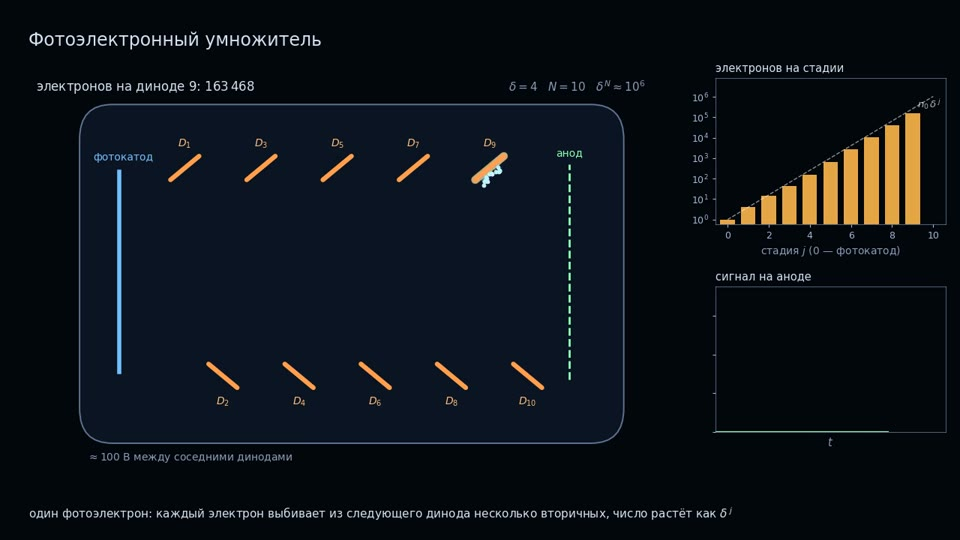
Как работает фотоумножительHow a photomultiplier tube worksQR 0008
Том 1, гл. 3 «Специальная теория относительности»Volume 1, Chapter 3 “Special Relativity”
 Относительность одновременностиThe relativity of simultaneityQR 0009
Относительность одновременностиThe relativity of simultaneityQR 0009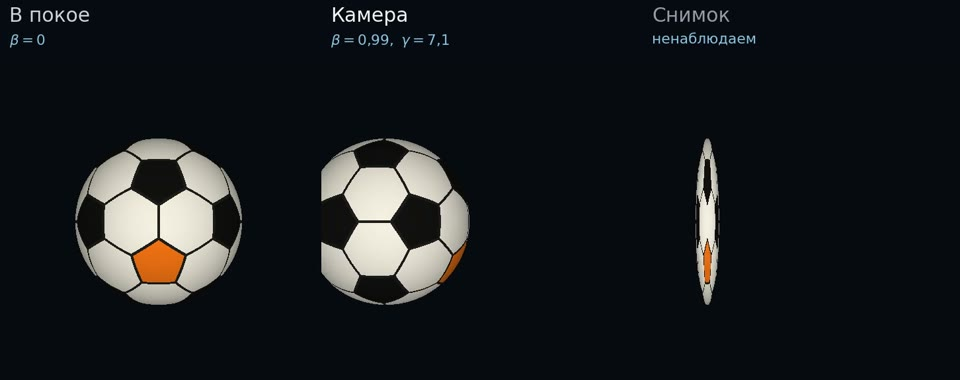
Вращение Пенроуза — ТерреллаPenrose–Terrell rotationQR 0010
Том 1, гл. 4 «Гравитация»Volume 1, Chapter 4 “Gravity”
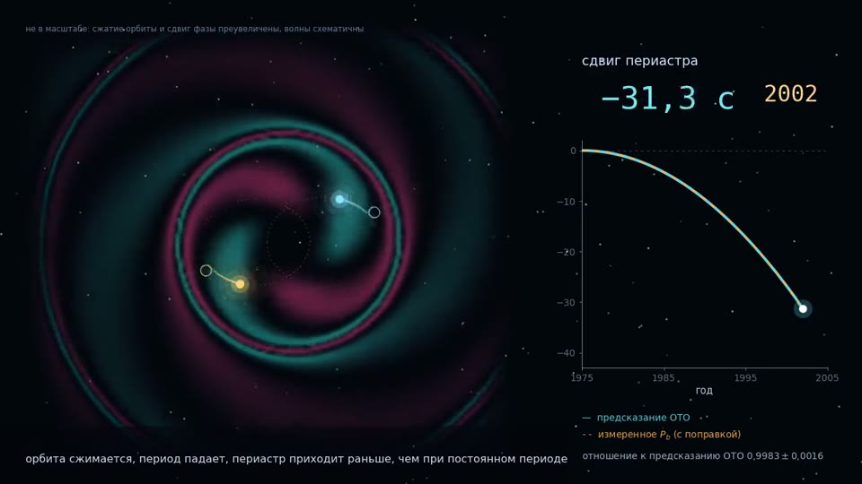
Двойной пульсар Халса — ТейлораThe Hulse–Taylor binary pulsarQR 0011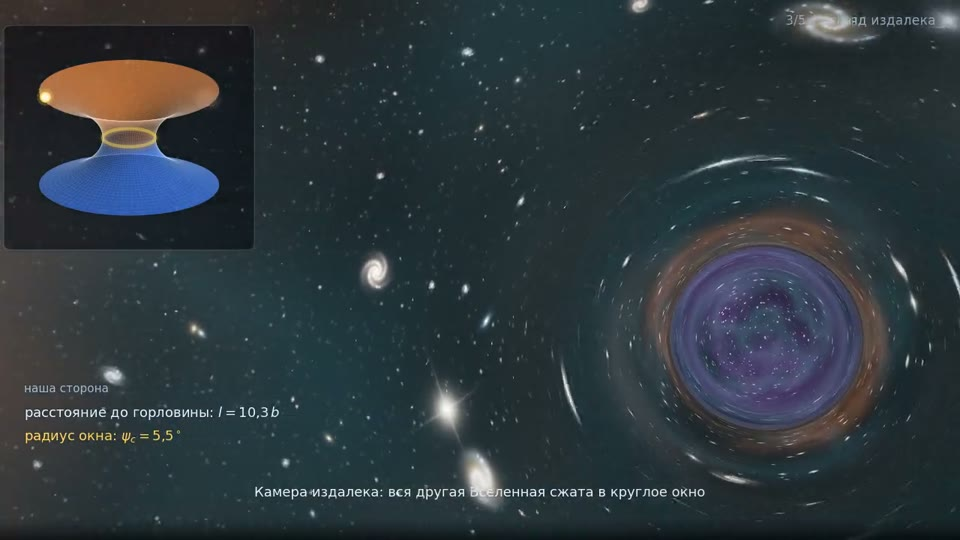
Камера у кротовой норы: свет двух ВселенныхA camera at a wormhole: the light of two universesQR 0012
Том 1, гл. 5 «Нерелятивистская квантовая механика»Volume 1, Chapter 5 “Nonrelativistic Quantum Mechanics”
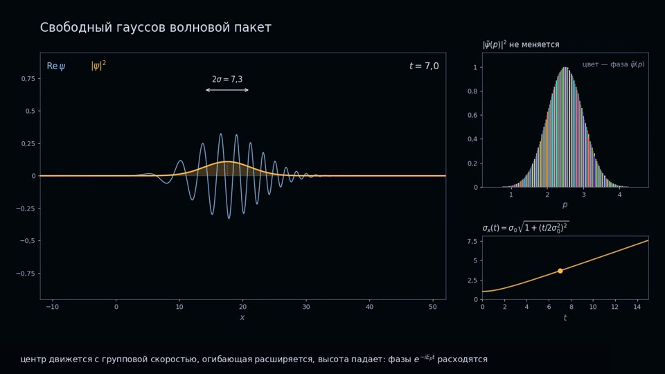
Свободный гауссов пакет: движение и расплываниеA free Gaussian wave packet: motion and spreadingQR 0013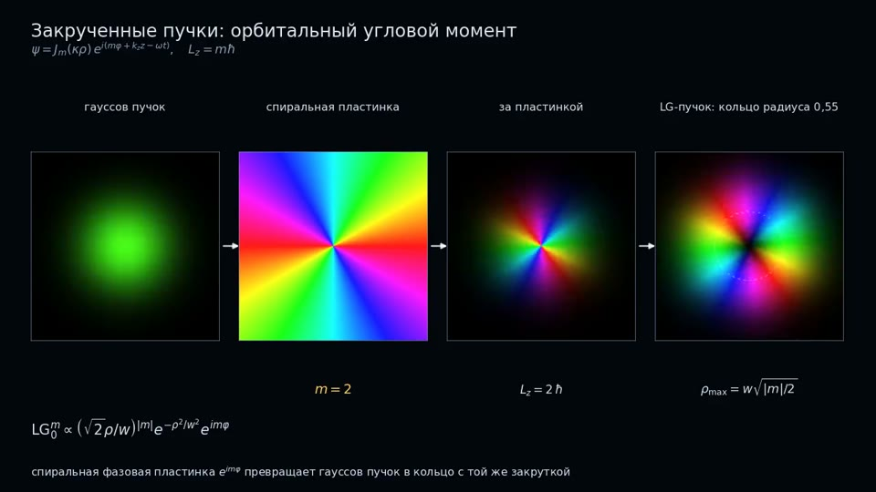
Закрученные пучки: орбитальный угловой моментTwisted beams: orbital angular momentumQR 0014
Том 1, гл. 6 «Уравнение Клейна — Фока — Гордона»Volume 1, Chapter 6 “The Klein–Fock–Gordon Equation”
Том 1, гл. 10 «Лоренц-инвариантность уравнения Дирака»Volume 1, Chapter 10 “Lorentz Invariance of the Dirac Equation”
Том 1, гл. 12 «Основы классической теории поля»Volume 1, Chapter 12 “Basics of Classical Field Theory”
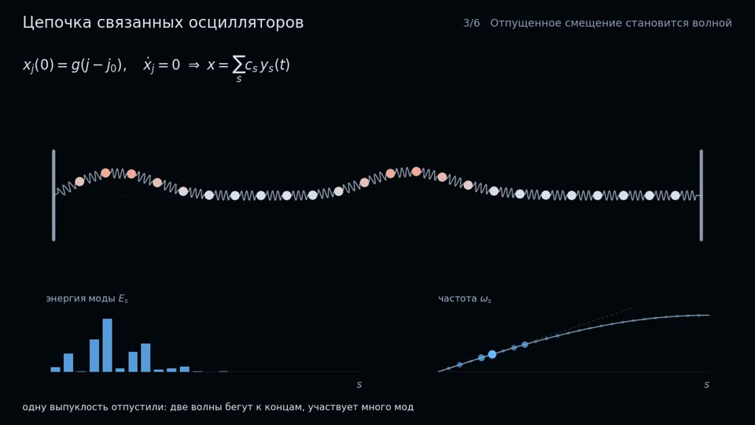
Цепочка связанных осцилляторовA chain of coupled oscillatorsQR 0017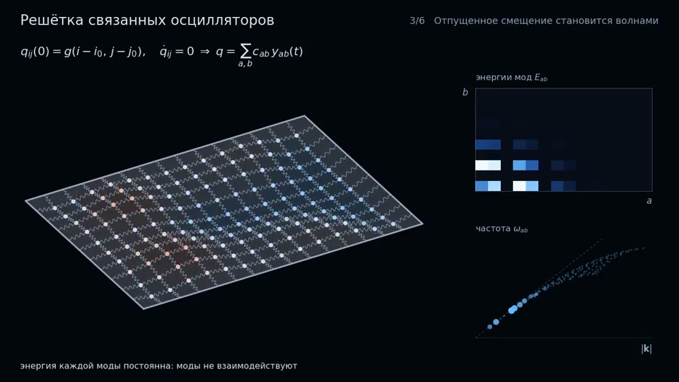
Двумерная решётка связанных осцилляторовA two-dimensional lattice of coupled oscillatorsQR 0018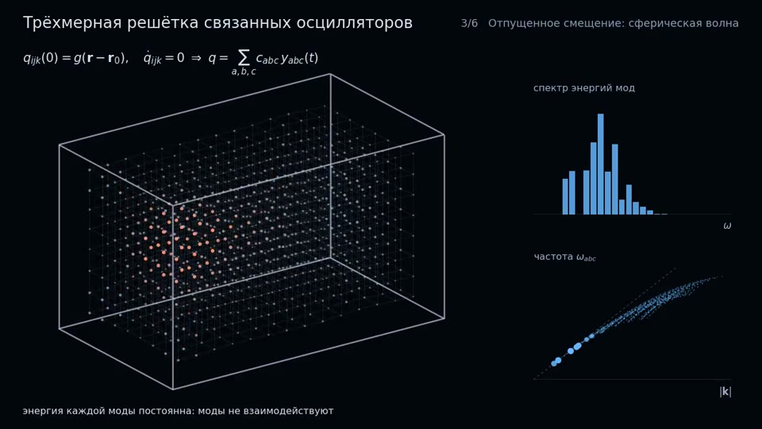
Трёхмерная решётка связанных осцилляторовA three-dimensional lattice of coupled oscillatorsQR 0019
Том 1, гл. 13 «Классические поля и их лагранжианы»Volume 1, Chapter 13 “Classical Fields and Their Lagrangians”
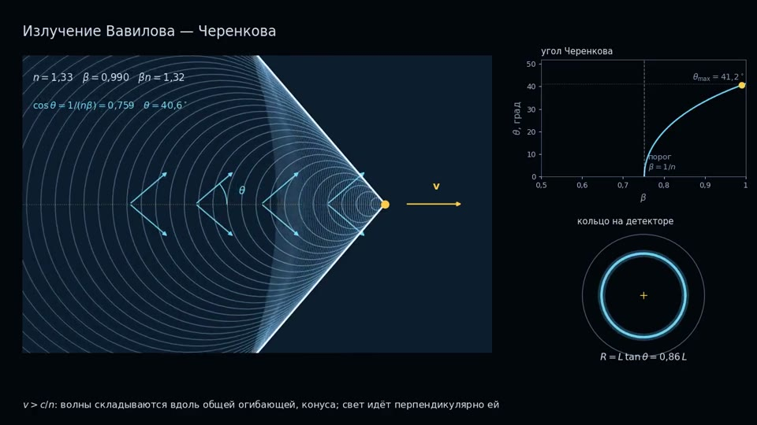
Излучение Вавилова — Черенкова: конус из волнCherenkov radiation: a cone of waveletsQR 0020 Круговая поляризацияCircular polarizationQR 0021
Круговая поляризацияCircular polarizationQR 0021
Том 1, гл. 17 «Вакуумная катастрофа»Volume 1, Chapter 17 “The Vacuum Catastrophe”
Том 1, гл. 18 «S-матрица»Volume 1, Chapter 18 “The S-Matrix”
Том 1, гл. 19 «Притяжение и отталкивание»Volume 1, Chapter 19 “Attraction and Repulsion”
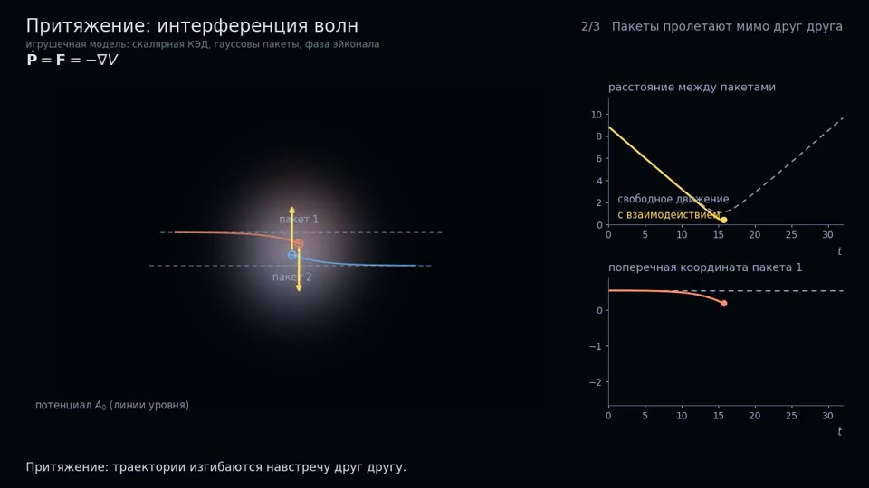
Притяжение: интерференция волнAttraction: interference of wavesQR 0024 Отталкивание: интерференция волнRepulsion: interference of wavesQR 0025
Отталкивание: интерференция волнRepulsion: interference of wavesQR 0025
Том 2, гл. 22 «Интеграл по траекториям»Volume 2, Chapter 22 “The Path Integral”

Том 2, гл. 23 «Калибровочная инвариантность»Volume 2, Chapter 23 “Gauge Invariance”
 Калибровочный принцип: два друга и полеThe gauge principle: two friends and a fieldQR 0027
Калибровочный принцип: два друга и полеThe gauge principle: two friends and a fieldQR 0027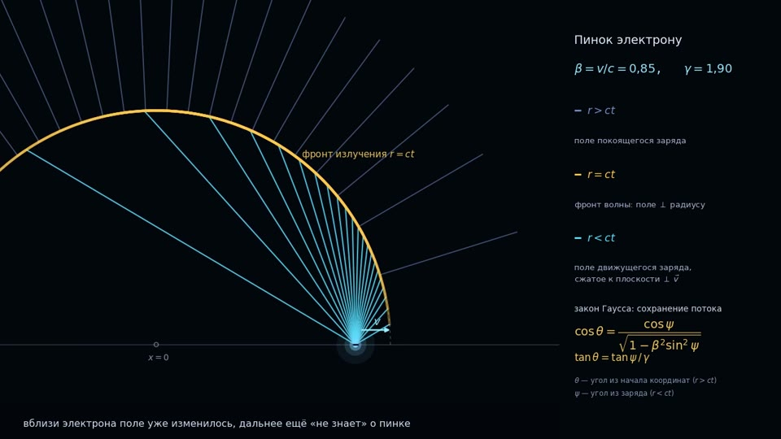
Пинок электрону: фронт электромагнитной волныA kick to an electron: the front of an electromagnetic waveQR 0028
Том 2, гл. 24 «Откуда у частицы масса?»Volume 2, Chapter 24 “Where Does a Particle Get Its Mass?”
 Эффект Мейснера и масса фотонаThe Meissner effect and the photon massQR 0029
Эффект Мейснера и масса фотонаThe Meissner effect and the photon massQR 0029 Киральные волны и масса фермионаChiral waves and the fermion massQR 0030
Киральные волны и масса фермионаChiral waves and the fermion massQR 0030
Том 2, гл. 27 «Слабые распады W-, Z-бозонов»Volume 2, Chapter 27 “Weak Decays of the W and Z Bosons”

Том 2, гл. 28 «Распады бозона Хиггса»Volume 2, Chapter 28 “Higgs Boson Decays”

Том 2, гл. 29 «Взаимодействие нейтрино с электроном»Volume 2, Chapter 29 “Neutrino–Electron Scattering”
 Рассеяние νμ + e → νe + μScattering νμ + e → νe + μQR 0033
Рассеяние νμ + e → νe + μScattering νμ + e → νe + μQR 0033 Рассеяние нейтрино через Z-бозонNeutrino scattering through the Z bosonQR 0034
Рассеяние нейтрино через Z-бозонNeutrino scattering through the Z bosonQR 0034